Mozilla, Pour un Web Ouvert
David Rajchenbach-Teller,
@ImYoric
,
yoric@mozilla.com
, yoric@irc.mozilla.org
Mozilla, Pour un Web Ouvert
Qui suis-je?
David Rajchenbach-Teller
Mozilla, Performance Team
+ Mozilla Education
Yoric (IRC, github, ...)
@ImYoric (Twitter, ...)
Introduction
Mozilla, qui sommes-nous ?
Web ouvert, champ de bataille
Lignes de front
Pour participer
Photo by the McClouds
À propos de Mozilla
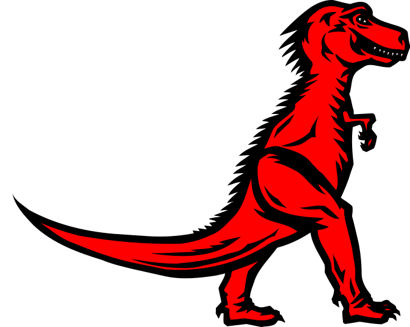
Firefox, Thunderbird, FirefoxOS, Rust, SpiderMonkey...
~600 employés, des milliers de volontaires.
But non lucratif !
Le web
Le Web des Savoirs
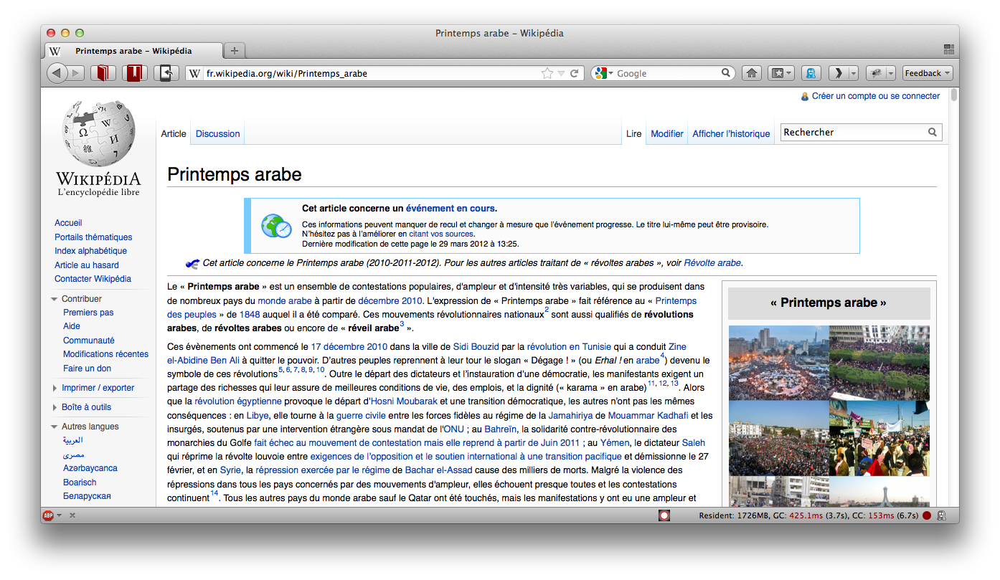
Le Web de la Collaboration
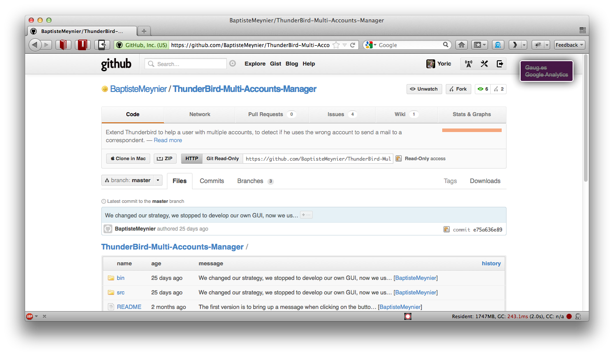
Le Web de la Communication
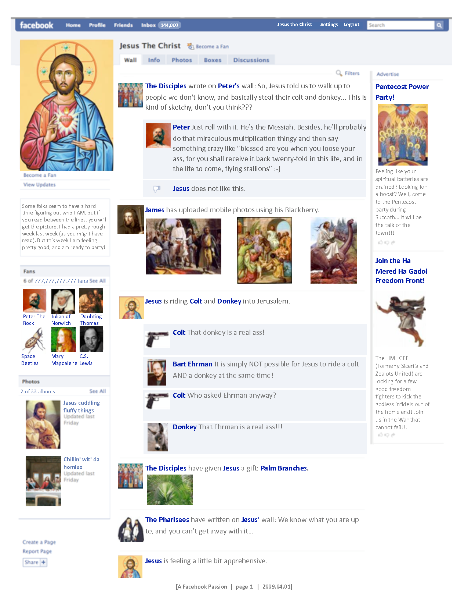
Le Web des Informations
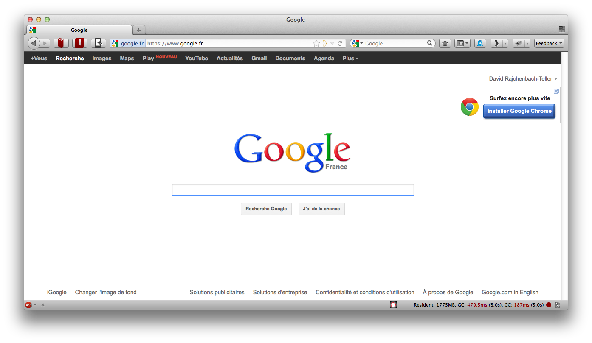
Le Web des Actualités
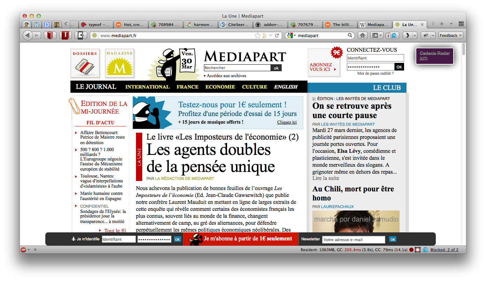
Le Web du Divertissement
Le Web du Monde Réel
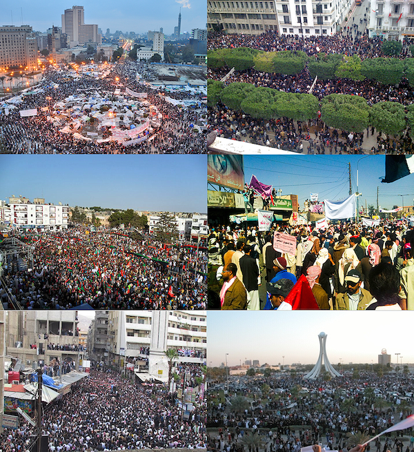
Et demain ?
Qui peut prédire de quel web nous aurons tous besoin ?
Browser Wars 1.0
Acte 1 : AOL, CompuServe, MSN...
Technologie avancée.
Source unique, filtrée.
Protocoles propriétaires.
Clientèle captive.
À qui appartiennent les données des utilisateurs ?
Acte 2 : The Web (Netscape, Internet Explorer, Opera, ...)
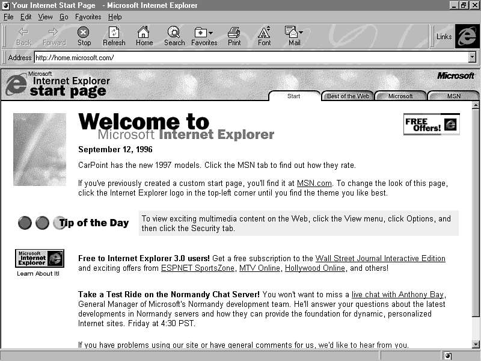
Technologie limitée.
Sources décentralisée, sans filtres.
Protocoles ouverts.
Utilisateurs libres.
Pas vraiment de données.
Acte 3 : Internet Explorer... contre le Web
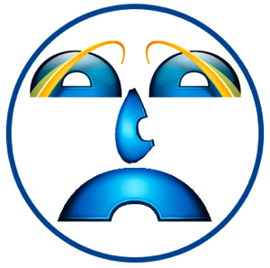
Technologie avancée.
Protocoles (de plus en plus) propriétaires et secrets.
Sources (de plus en plus) filtrables.
Clientèle (de plus en plus) captive.
Sécurité... quand ça rapporte.
À qui appartiennent les informations ?
Le monde sous Internet Explorer
Ce web fermé était-il compatible avec :
Wikipedia ?
Github ?
Facebook ?
Le Printemps Arabe ?
Les nécessités de demain ?
Browser Wars 2.0 : Mozilla + Opéra vs. Verrouillage
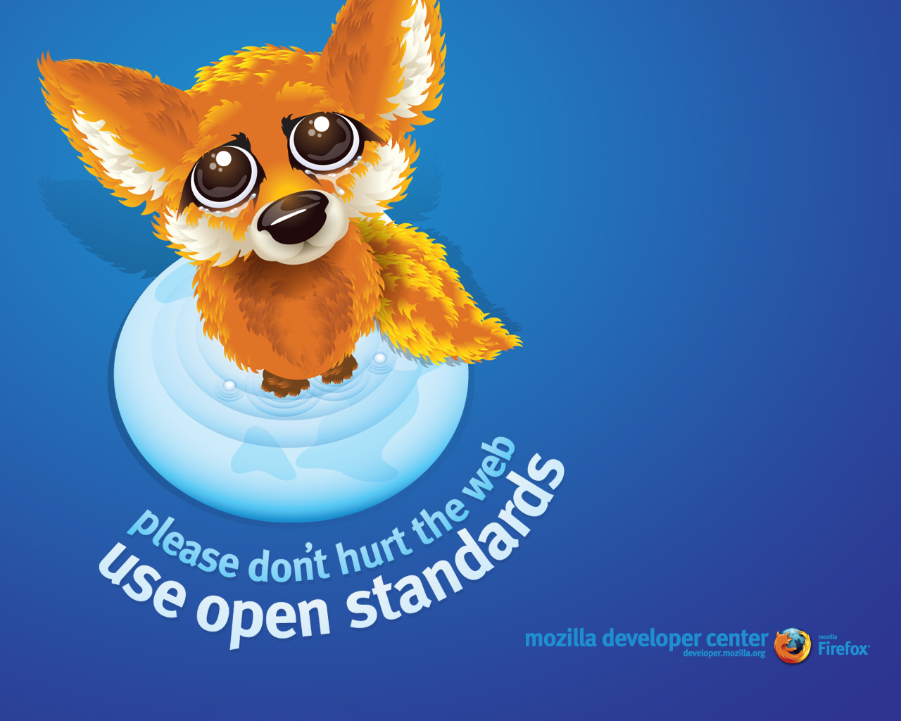
Aujourd'hui, le web
Technologie puissante.
Standards ouverts.
Accès ouverts.
Sources multiples.
Modèles de sécurité.
Navigateurs multiples.
Q: Et Hadopi ?
Q: Et ACTA ?
Un monde parfait ?
Profil : Facebook
Protocoles clairs.
Contenu centralisé.
Source unique, filtrée.
Vos données ne vous appartiennent pas.
Q: Qu'est-ce qui rapporte de l'argent ?
Q: Que fait le bouton Like ?
Profil : Google
Protocoles clairs.
Contenu centralisé.
Source unique, filtrée.
Vos données ne vous appartiennent pas.
Q: Qu'est-ce qui rapporte de l'argent ?
Q: Que fait le bouton +1 ?
Profil : iOS
Protocoles clairs.
Contenu centralisé.
Source unique, filtrée.
Fonctionnalités limitées artificiellement.
Vos données vous appartiennent de moins en moins.
Aucune transparence.
Q: En quoi consiste l'accord avec Twitter ?
Profil : Android
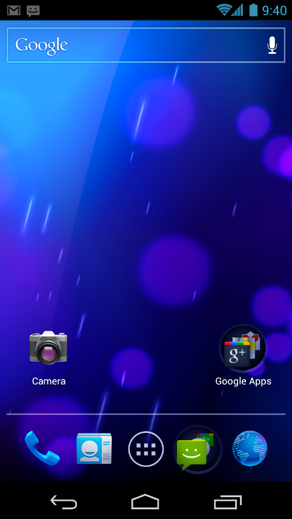
Protocoles clairs.
Contenu centralisé.
Source unique (pour les débutants), filtrée.
Fonctionnalités limitées artificiellement.
Vos données ne vous appartiennent pas.
Aucune transparence.
Q: Qu'est-ce qui rapporte de l'argent ?
Profil : Chrome, Chrome OS
Protocoles clairs et ouverts
... mais pas tous.
Tiens, (aussi) du contenu centralisé.
Tiens, (aussi) une source unique, filtrée.
Vos données ne vous appartiennent pas.
Q: Qu'est-ce qui rapporte de l'argent ?
Le monde sous un silo
Ce web est-il compatible avec :
Wikipedia ?
Github ?
Facebook ?
Zynga ?
Le Printemps Arabe ?
Les nécessités de demain ?
Le combat continue
Front 1 : La vie privée
Les utilisateurs doivent posséder leurs informations, être au courant de l'utilisation de leurs données.
Mozilla Persona
Mozilla + W3C Do Not Track
Mozilla Collusion
Mozilla Marketplace
Firefox OS
Mais aussi Tor
Mais aussi BetterPrivacy, Ghostery, ...
Front 2 : Apprendre à innover
Mozilla Education
Mozilla WebMakers
Mozilla Thimble
Firefox Inspector and Tilt
Mozilla Popcorn
Et surtout Firefox OS !
Front 3 : Les outils pour innover
Mozilla DevTools, CodeEditor, TypeInference, ResponsiveView
Mozilla Open Web Apps
Mozilla + W3C WebAPI, DeviceAPI
Mozilla Firefox OS (oui, encore)
WebGL, WebRTC...
Mais aussi jQuery, Dojo, ...
Mais aussi Node.js, Python, OCaml, ...
Vous pouvez participer !
Coder
- Améliorer Firefox, Firefox OS et les autres
Internationaliser
- Traduire les applications, les sites web
Innover
- Développer des applications, se servir de toutes ces technologies ...
Utiliser
- Préférer les technologies ouvertes, refuser les silos
Répandre
- Faire passer le mot – nous sommes là pour défendre les utilisateurs !
Suggérer
- Tester, demander des fonctionnalités, rapporter des bugs
That's all folks
David Rajchenbach-Teller
Mozilla, Performance Team
+ Mozilla Education
Yoric (IRC, github, ...)
@ImYoric (Twitter, ...)
Photo by Yortw


 Ce web fermé était-il compatible avec :
Ce web fermé était-il compatible avec :

 Ce web est-il compatible avec :
Ce web est-il compatible avec :